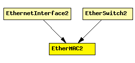

File: NetworkInterfaces/Ethernet/EtherMAC2.ned
C++ definition: click here
Ethernet MAC which supports full duplex operation ONLY.
Most of today's Ethernet networks are switched, and operate in full duplex mode. Full-duplex transmission can be used for point-to-point connections only. Since full-duplex connections cannot be shared, collisions are eliminated. This setup eliminates most of the need for the CSMA/CD access control mechanism because there is no need to determine whether the connection is already being used. This allows for a much simpler simulation model for MAC. (In "traditional" Ethernet simulations, most of the code deals with the shared medium and the CSMA/CD mechanism.) EtherMAC2 implements Ethernet without shared medium and CSMA/CD. (If you need half-duplex operation, see EtherMAC which is for a full-blown and therefore more complicated Ethernet MAC model.)
EtherMAC2 performs transmission and reception of frames. It does not do encapsulation/decapsulation; see EtherLLC and EtherEncap for that.
Supported variations:
Supports all three Ethernet frame types. (It handles EtherFrame message class; specific frame classes (Ethernet-II, IEEE 802.3) are subclassed from that one.) RAW mode (only used by the IPX protocol) is not supported.
Expected environment:
Operation
Processing of frames received from higher layers:
Processing of frames incoming from the network:
The module does not perform encapsulation or decapsulation of frames -- this is done by higher layers (EtherLLC or EtherEncap).
When a frame is received from the higher layers, it must be an EtherFrame with message kind set to ETH_FRAME, and with all protocol fields filled out (including the destination MAC address). The source address, if left empty, will be filled in. Then frame is queued and transmitted according to the CSMA/CD protocol.
Data frames received from the network are EtherFrames, with message kind set to ETH_FRAME. They are passed to the higher layers without modification. Also, the module properly responds to PAUSE frames, but never sends them by itself -- however, it transmits PAUSE frames received from upper layers. See PAUSE handling for more info.
Autoconfiguration
EtherMAC2 does NOT include autoconfiguration. Link speed is taken from the datarate attribute of the connection instead of module parameters or autoconfiguration.
For more info see Ethernet Model Overview.
Disabling and disconnecting
If the MAC is not connected to the network ("cable unplugged"), it will start up in "disabled" mode. A disabled MAC simply discards any messages it receives. It is currently not supported to dynamically connect/disconnect a MAC.
Queueing
In routers, MAC relies on an external queue module (see OutputQueue) to model finite buffer, implement QoS and/or RED, and requests packets from this external queue one-by-one.
In hosts, no such queue is used, so MAC contains an internal queue named txQueue to queue up packets waiting for transmission. Conceptually, txQueue is of infinite size, but for better diagnostics one can specify a hard limit in the txQueueLimit parameter -- if this is exceeded, the simulation stops with an error.
Physical layer messaging
Please see Messaging on the physical layer.
Statistics
Output vectors and WATCHes:
Output scalars (written in the finish() function) include the final values of the above variables and throughput.
See also: EthernetInterface, EthernetInterface, OutputQueue, EtherEncap, EtherLLC
See also: EtherFrame, EthernetIIFrame, EtherFrameWithLLC, Ieee802Ctrl
The following diagram shows usage relationships between modules, networks and channels. Unresolved module (and channel) types are missing from the diagram. Click here to see the full picture.
If a module type shows up more than once, that means it has been defined in more than one NED file.
| EthernetInterface2 | Ethernet network interface, which supports full-duplex operation only. Corresponds to the prototype NetworkInterface. Complements EtherMAC2 and EtherEncap with an output queue for QoS and RED support. |
| EtherSwitch2 | Model of an Ethernet switch built with EtherMAC2, which means that all ports are operating in strictly full-duplex mode. Use EtherSwitch if you need half-duplex operation on some ports. |
| Name | Type | Description |
|---|---|---|
| promiscuous | bool | if true, all packets are received, otherwise only the ones with matching destination MAC address |
| address | string | MAC address as hex string (12 hex digits), or "auto". "auto" values will be replaced by a generated MAC address in init stage 0. |
| txQueueLimit | numeric | maximum number of frames queued up for transmission; additional frames are dropped. Only used if queueModule=="" |
| queueModule | string | name of optional external queue module |
| writeScalars | bool | enable/disable recording statistics in omnetpp.sca |
| Name | Direction | Description |
|---|---|---|
| physIn | input | to physical layer or the network |
| physOut | output | to physical layer or the network |
| upperLayerIn | input | to EtherLLC or MACRelayUnitPP |
| upperLayerOut | output | to EtherLLC or MACRelayUnitPP |
simple EtherMAC2 parameters: promiscuous : bool, // if true, all packets are received, otherwise only the // ones with matching destination MAC address address : string, // MAC address as hex string (12 hex digits), or // "auto". "auto" values will be replaced by // a generated MAC address in init stage 0. txQueueLimit : numeric, // maximum number of frames queued up for transmission; // additional frames are dropped. Only used if queueModule=="" queueModule: string, // name of optional external queue module writeScalars: bool; // enable/disable recording statistics in omnetpp.sca gates: in: physIn; // to physical layer or the network out: physOut; // to physical layer or the network in: upperLayerIn; // to EtherLLC or MACRelayUnitPP out: upperLayerOut; // to EtherLLC or MACRelayUnitPP endsimple